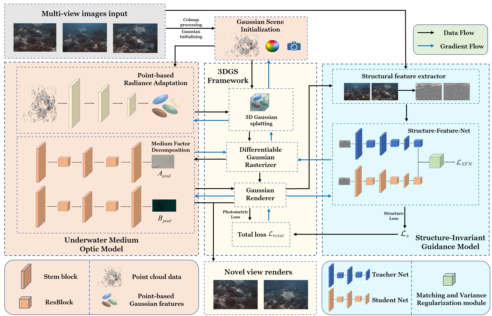

SeaSIG: Underwater 3D Gaussian Splatting via Medium–Radiance Decomposition and Structure-Invariant Guidance
IROS, 2026.

PhD Student
I am a PhD student at Institute of Artificial Intelligence and Robotics of Xi'an Jiaotong University in China. Before that, I received my B.S. and M.S. degrees from Beijing Institute of Technology in 2019 and 2022 respectively. My research interests are in generative model, hand-object interaction and computer vision.

IROS, 2026.

IEEE Transactions on Visualization and Computer Graphics (TVCG), pp. 1–14, 2026. DOI: 10.1109/TVCG.2026.3712181
@article{tian2026funhoi,
title={FunHOI: Annotation-Free 3D Hand-Object Interaction Generation via Functional Text Guidance},
author={Tian, Yongqi and Sun, Xueyu and He, Haoyuan and Wang, Jianlei and Jiang, Caigui},
journal={IEEE Transactions on Visualization and Computer Graphics},
pages={1--14},
year={2026},
doi={10.1109/TVCG.2026.3712181},
url={https://doi.org/10.1109/TVCG.2026.3712181}
}

Neural Networks, 152:487--498, 2022.
@article{tian2022giugans,
title={GIU-GANs: Global Information Utilization for Generative Adversarial Networks},
author={Tian, Yongqi and Gong, Xueyuan and Tang, Jialin and Su, Binghua and Liu, Xiaoxiang and Zhang, Xinyuan},
journal={Neural Networks},
volume={152},
pages={487--498},
year={2022},
doi={10.1016/j.neunet.2022.05.014},
url={https://www.sciencedirect.com/science/article/pii/S0893608022001885}
}

Information Sciences, 613:184--203, 2022.
@article{gong2022kdctime,
title={KDCTime: Knowledge Distillation with Calibration on InceptionTime for Time-series Classification},
author={Gong, Xueyuan and Si, Yain-Whar and Tian, Yongqi and Lin, Cong and Zhang, Xinyuan and Liu, Xiaoxiang},
journal={Information Sciences},
volume={613},
pages={184--203},
year={2022},
doi={10.1016/j.ins.2022.08.057},
url={https://www.sciencedirect.com/science/article/pii/S0020025522009434}
}

Computer-Aided Design, 189:103935, 2025.
@article{wang2025modular,
title={Modular Shape Modeling with Controllable Discrete Equivalence Class Distribution},
author={Wang, Jianlei and Wu, Zeyang and Tian, Yongqi and Jiang, Caigui},
journal={Computer-Aided Design},
volume={189},
pages={103935},
year={2025},
doi={10.1016/j.cad.2025.103935},
url={https://www.sciencedirect.com/science/article/pii/S001044852500096X}
}